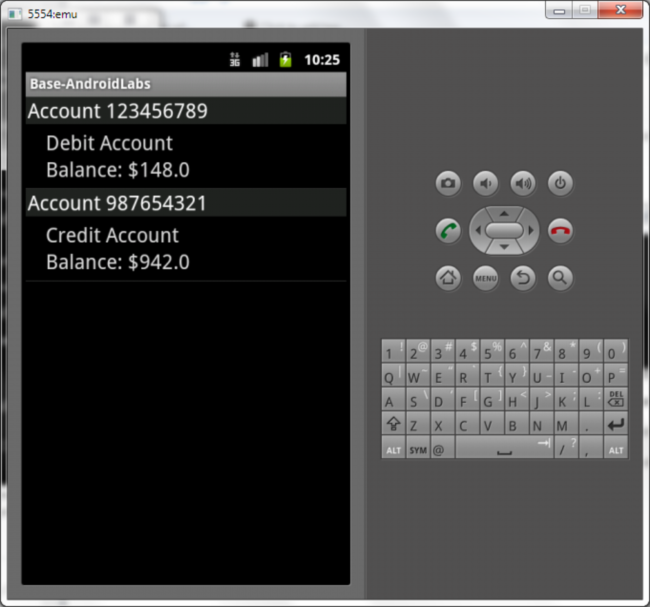

Lab 4 - Secure Logging
Many developers log information to the android log. Sometimes sensitive data as well. To inspect the android emulators log files you have to run the command:
adb logcat

The command will trail the log file allowing for you to see the output of any applications logging to the console.
In this lab, run ExploitMeMobile and execute a transfer of funds within the application or just run through the application in general.
Observe what information is passed within the log file as you execute different screens in the application itself.

Visit the account screen and observe the logcat output.

You can see that the account information is being logged to the logcat file.
Solution
It’s important to be aware of what you are logging and only log non-sensitive information. Verbose log output is very useful for developers, but can be a goldmine of sensitive information for attackers. Be especially careful about logging session keys and URLs that may contain important values.